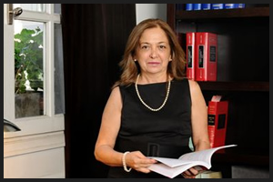

DR. LUIS ENRIQUE PALACIO
Nació en Buenos Aires el 6 de enero de 1958, cursó estudios universitarios en la Facultad de Derecho y Ciencias Sociales de la Universidad de Buenos Aires, de la que egresó con el título de Abogado en agosto de 1982. Ha sido asesor de la Procuración del Tesoro de la Nación; docente de la Universidad de Buenos Aires, docente del Instituto Nacional de la Administración Pública y actualmente director de la carrera de Derecho Procesal y la Defensa del Estado de la Escuela de Abogados del Estado. Es miembro de la Comisión de Derecho Administrativo del Colegio Público de Abogados y Presidente de la Comisión de Derecho Procesal del Colegio de Abogados de la Ciudad de Buenos Aires. Posee una amplia trayectoria como abogado especialista en litigios derivados de la responsabilidad civil, del contrato de seguro y de reclamos laborales. Es abogado de compañías aseguradoras y también ejerce la defensa judicial de distintas empresas frente a reclamos de naturaleza laboral.
DRA. ALEJANDRA KNUDSEN DE PALACIO
Alejandra Knudsen se recibió de abogada en el año 1982 en la Facultad de Derecho y Ciencias Sociales de la Universidad de Buenos Aires. Actualmente es socia titular del estudio PALACIO & ASOCIADOS. Mediadora Prejudicial matriculada ante el Ministerio de Justicia de la Nación, con activo ejercicio profesional como mediadora pública y privada. Especialista en Mediación Familiar. Miembro de la Comisión de Resolución Extrajudicial de Conflictos del Colegio de Abogados de la Ciudad de Buenos Aires e integrante del panel de Mediadores de dicha institución. Participante de cursos y seminarios sobre negociación, mediación y arbitraje internacional en el país y en el exterior. Abogada de familia, empresas familiares, cuestiones sucesorias y agronegocios. En el año 2011 obtuvo el título de Especialista en Derecho Tributario expedido por la ECAE (Escuela del Cuerpo de Abogados del Estado de la Procuración del Tesoro de la Nación).
DRA. graciela fescina
Abogada recibida en la Universidad de Buenos Aires en el año 1988. Socia del Estudio Jurídico "Andrés J. Fescina & Asociados", recientemente asociada a "L.E. Palacio & Asociados". En el ámbito privado se desempeña en temas del derecho de civil en general con el tratamiento extrajudicial y/o judicial de la responsabilidad civil (contractual, extracontractual) por diversas causas (accidentes de tránsito, mala praxis médica, contrato de transporte, etc.) y en el ambito del derecho comercial en los temas de seguros y empresa. En el ámbito publico desde el año 2003 se ha desempeñado como asesora en la Legislatura de la Ciudad Autónoma de Buenos Aires